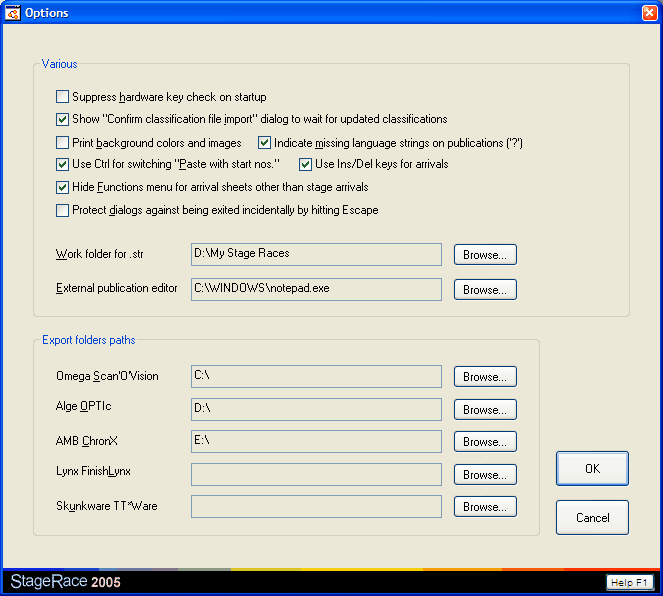

Options
The Options dialog window allows you to
set the preferences of the current user for working with StageRace.

Options dialog
The following options can be set:
- Switch the following functions on and off:
- Suppress hardware key
check on startup
Normally StageRace would inform you on startup about a missing hardware
key, giving you the chance to supply a key before the software falls back
into evaluation mode. This can be suppressed through this option.
- Show "Confirm classification
file import" dialog to wait for updated classifications
Through this option you can have StageRace display a
dialog as extra step between choosing a file to import from and getting
the import
preview dialog. This
dialog helps you waiting for the newest version of the file that you
want to import.
- Print background colors
and images
This option is copied from the advanced internet options in the Control
Panel.
- Indicate missing language
strings on publications ('?')
When StageRace fails to look up certain strings in the
multilingual database, through this option an indication for the missing
strings can be printed on publications.
- Use Ctrl for switching
"Paste with start nos."
Normally pressing the Ctrl key on your keyboard while having the
competitors view displayed, would toggle in the menu.
This key-press can be ignored through this option.
- Use Ins/Del keys for arrivals
Enables the use of the keys Ins and Del to work in the arrival
tab sheets to respectively insert empty positions or declass. a selection.
- Hide Functions menu for arrival sheets other
than stage arrivals
Hide the Functions menu so that you do not accidentally insert imported
data into e.g. sprint or bonus tab sheets as imported data on average
goes towards the stage arrival.
- Protect dialogs against being exited incidentally
by hitting Escape
Will simply ignore the Escape key in all dialogs so that you'll have to
explicitly activate the OK or Cancel
buttons.
- Choose the location of your
work folder.
- Choose the executable file that is to be used as your
external publication editor.
- Choose the location where to place exported StageRace
files for Omega Scan'O'vision,
Lynx FinishLynx,
Alge OPTIc, AMB ChronX
and Skunkware TT*Ware.